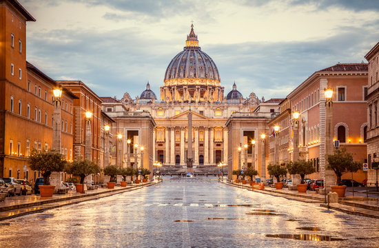
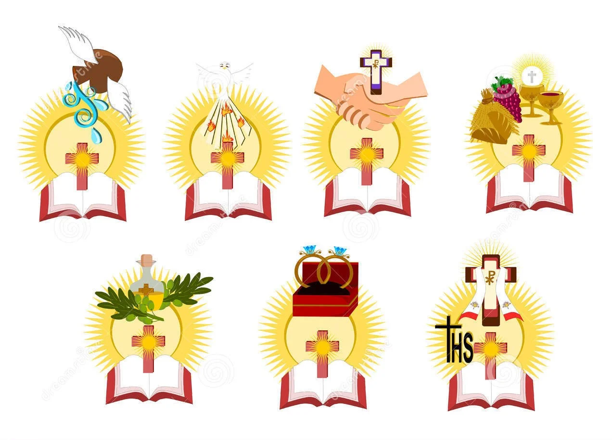
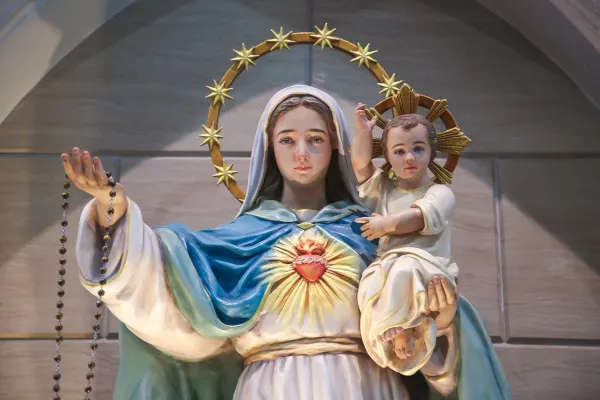
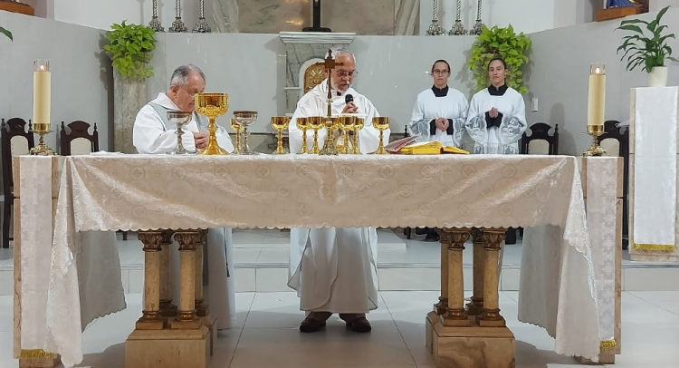
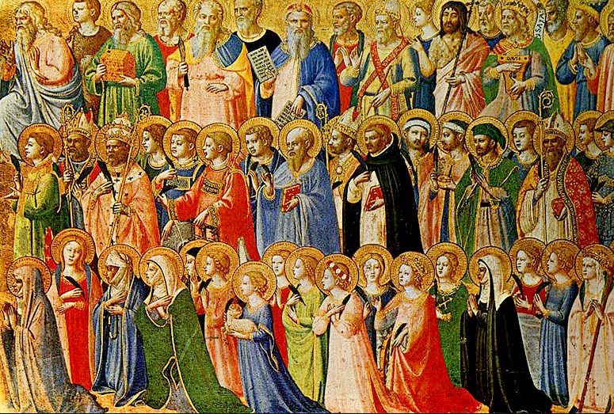
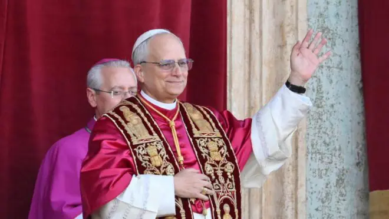
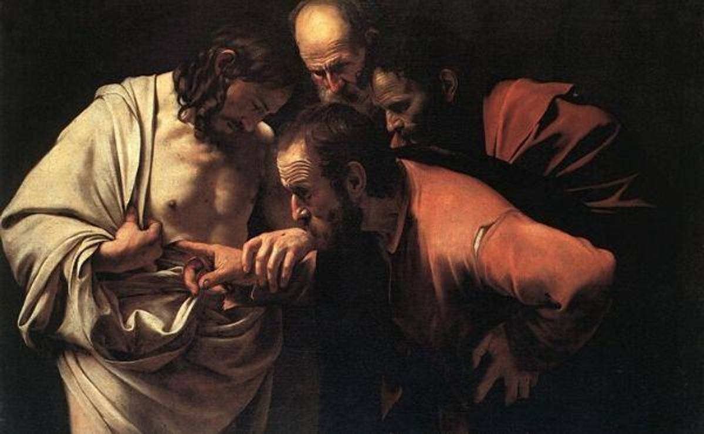

O Papa é a maior autoridade da Igreja Católica e é reconhecido como o sucessor de São Pedro, o primeiro dos apóstolos escolhido por Jesus. Ele tem a missão de guiar espiritualmente os mais de um bilhão de católicos espalhados pelo mundo, promovendo a unidade, a paz, a caridade e a defesa dos ensinamentos cristãos. Além disso, o Papa é visto como um sinal de comunhão entre os fiéis e a garantia da continuidade da fé.
O Papa reside no Vaticano, um pequeno Estado soberano situado no coração de Roma, na Itália. O Vaticano é o menor país do mundo, tanto em tamanho quanto em população, mas tem uma importância gigantesca para os católicos e também para a história e a cultura mundial. É lá que estão localizadas a famosa Praça de São Pedro, a Basílica de São Pedro, os Museus do Vaticano e a Capela Sistina, que abriga os belíssimos afrescos de Michelangelo.
O papel do Papa não é apenas religioso, mas também diplomático e social. Ele se encontra com líderes de diferentes religiões e nações, buscando promover a paz, o diálogo, o respeito entre os povos e os direitos humanos. O Papa levanta sua voz em defesa dos pobres, dos refugiados, da preservação do meio ambiente e da construção de um mundo mais justo e solidário.
A eleição de um Papa acontece através do conclave, uma reunião dos cardeais da Igreja, realizada na Capela Sistina, no Vaticano. Após um processo de oração, reflexão e votação secreta, quando um novo Papa é eleito, a fumaça branca sobe da chaminé, anunciando ao mundo que a Igreja tem um novo líder espiritual. O anúncio oficial é feito na varanda da Basílica de São Pedro com a famosa frase em latim: “Habemus Papam”, que significa “Temos um Papa”.
O Vaticano é também um centro de peregrinação para milhões de católicos. Todos os anos, pessoas de diferentes países visitam o local para participar de missas, receber a bênção do Papa e conhecer os lugares sagrados e históricos. Além disso, o Vaticano preserva documentos, obras de arte e tesouros culturais que fazem parte da herança da humanidade.
Portanto, o Papa e o Vaticano são símbolos vivos da fé católica, da tradição, da cultura e da busca constante por um mundo onde reine o amor, a paz e a fraternidade entre todos os povos.

Os sacramentos são sinais visíveis da graça de Deus. A Igreja Católica reconhece sete: batismo, eucaristia, crisma, reconciliação, unção dos enfermos, ordem e matrimônio

Maria tem um papel central na fé católica como Mãe de Deus e modelo de fé e obediência. É especialmente venerada nas orações e nas festas litúrgicas, como a Assunção e a Imaculada Conceição.

A celebração da Eucaristia é o coração da vida católica. Nela, os fiéis revivem o sacrifício de Cristo e recebem o Corpo e Sangue de Jesus.

Os santos são exemplos de vida cristã que intercedem junto a Deus. Cada santo tem uma história única de fé, coragem e serviço à Igreja.
A Igreja Católica sempre promoveu a ajuda aos pobres, doentes e necessitados. A prática da caridade é uma expressão concreta do amor cristão.

Após a eleição no conclave, o novo Papa foi apresentado ao mundo na sacada da Basílica de São Pedro. Fiéis de todos os cantos celebraram a escolha, marcada por esperança e renovação.

Milhares de fiéis reuniram-se em oração pela nova liderança da Igreja Católica, com celebrações em diversas partes do mundo.